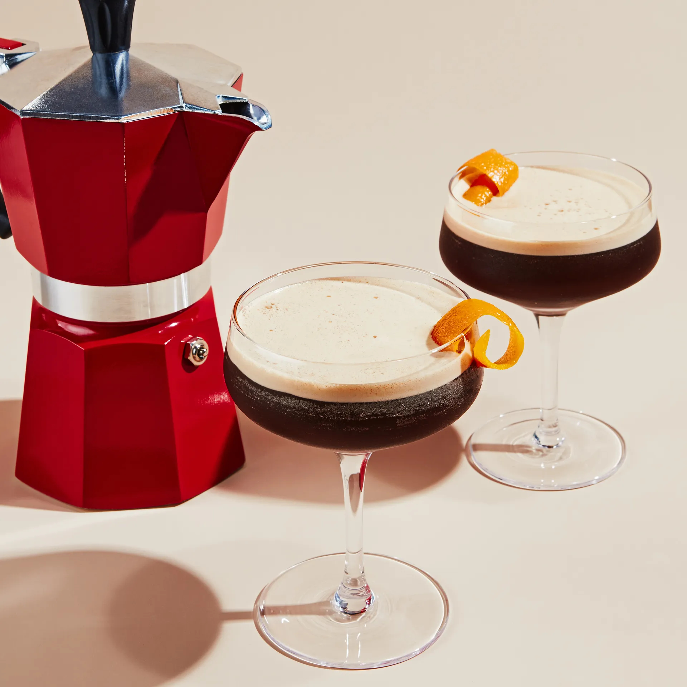

Espresso Martini

My favorite cocktail.
The classic espresso martini, also known as a vodka espresso, is a cold caffeinated alcoholic drink made with espresso, coffee liqueur, and vodka.
It is not a true martini as it contains neither gin nor vermouth, but is one of many drinks that incorporate the term martini into their names.
- 2 ounces vodka
- 1/2 ounces coffee liquer, usually Kahlúa
- 1 ounce freshly brewed espresso
- 1/4 ounce simple syrup
- cofee beans
- Add vodka, coffee liqueur, espresso, and simple syrup to a shaker filled with ice and shake until well-chilled.
- Strain into a chilled cocktail glass.
- Garnish with 3 coffee beans.
- Enjoy!